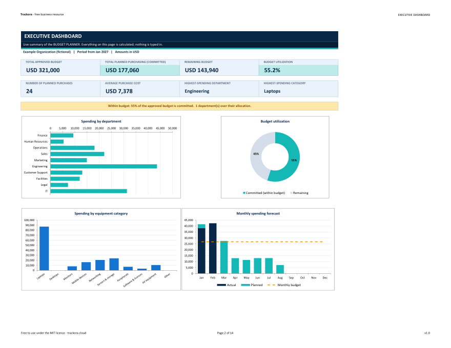
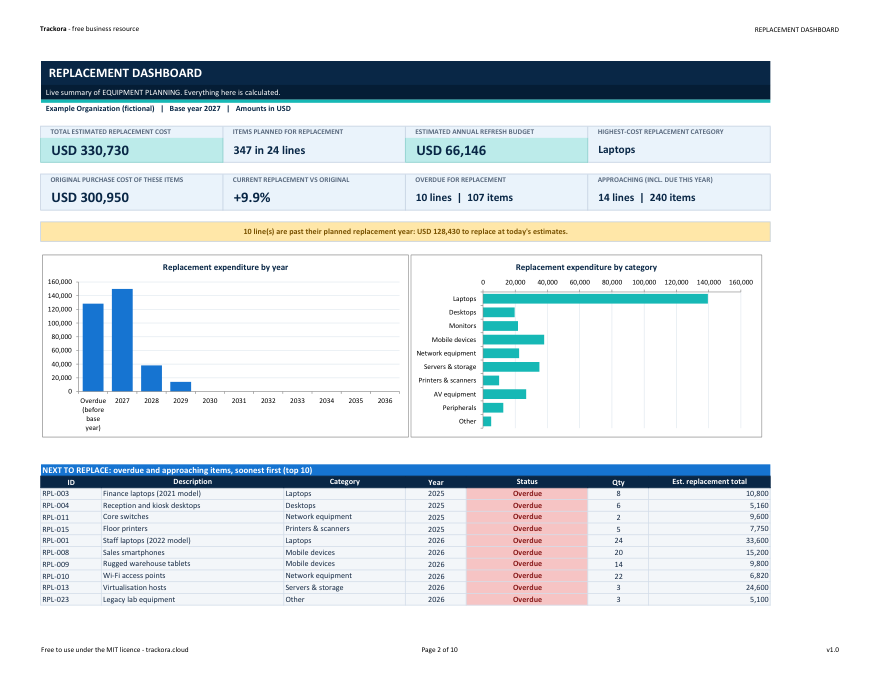
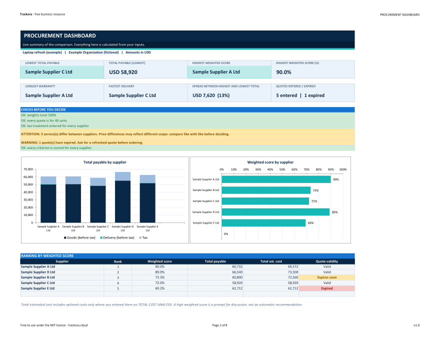
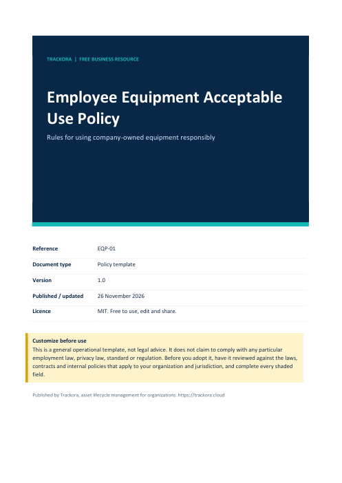
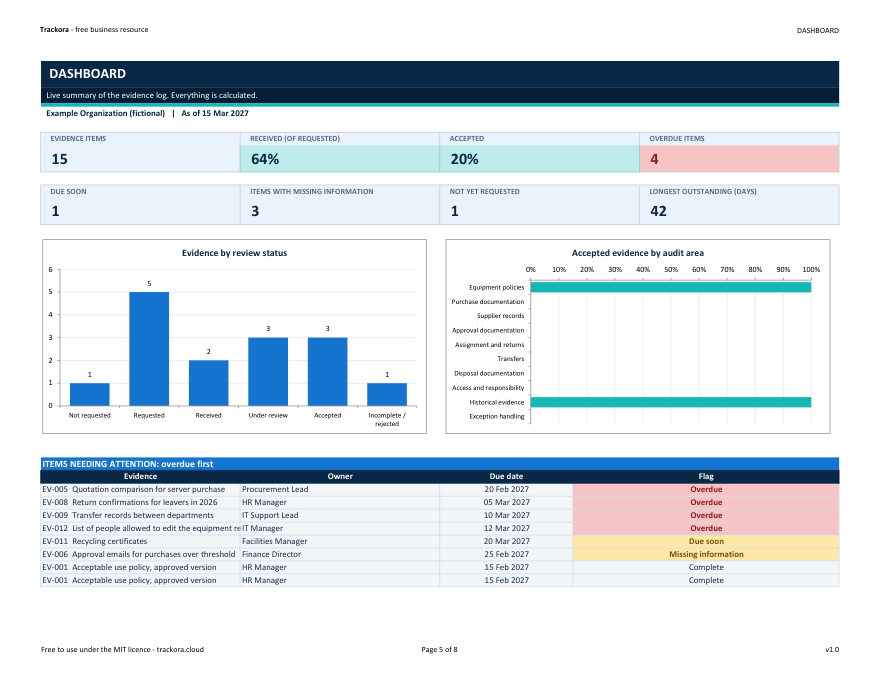

Excel
IT Equipment Budget Planner
Plan purchasing budgets, allocate them across departments, forecast spending by month and test price scenarios.
Details, previews and all files →Five professionally designed downloads. No sign-up, no email, no account. Free to use and adapt (MIT licence).

Plan purchasing budgets, allocate them across departments, forecast spending by month and test price scenarios.
Details, previews and all files →
Estimate replacement costs, see which equipment is due, and plan annual refresh budgets with scenarios.
Details, previews and all files →
Compare up to six quotations on total cost and weighted criteria, then record risks and the final decision.
Details, previews and all files →
Seven editable documents: acceptable use, agreement, issue, damage/loss, return, remote working and a manager guide.
Details, previews and all files →
Preparation guide, readiness and document checklists, evidence log, findings tracker, timeline and management summary.
Details, previews and all files →Looking for a first equipment register? The original starter CSV templates and guides are still here: asset inventory CSV, checkout log, handover form, audit checklist and QR labeling guide.
Built by Trackora, asset lifecycle management for organizations. The resources work on their own; you do not need Trackora to use them. Source and licence: GitHub repository.